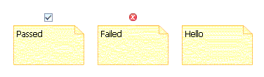

This guide describes the Decorator Service example in the SDK. The Decorator Service provides an easy way to annotate a shape or connection with an image. This
example demonstrates how to add an image decoration above a note depending on the text in the note.
This example plug-in is named org.eclipse.gmf.examples.runtime.diagram.decorator.
The purpose of the plug-in is to install a decorator on a shape with description text (e.g. a note) which will review the text on the shape and decorate the shape accordingly. More specifically, if the text begins with "Passed" a checkmark icon is shown above the shape, and if the text begins with "Failed" an error icon is shown above the shape.

The 'ReviewDecorator' listens to changes to the text on the shape and adds the appropriate decoration. The 'ReviewDecoratorProvider' installs the 'ReviewDecorator' on all the shapes that contain description text. To register this provider, an
extension for the org.eclipse.gmf.runtime.diagram.ui.decoratorProviders
extension point must be added to the plugin.xml
file.
i.e.
<extension
id="org.eclipse.gmf.examples.runtime.diagram.decorator.provider.ReviewDecoratorProvider"
name="%ext.reviewDecoratorProvider"
point="org.eclipse.gmf.runtime.diagram.ui.decoratorProviders">
<decoratorProvider
class="org.eclipse.gmf.examples.runtime.diagram.decorator.provider.ReviewDecoratorProvider">
<Priority name="Lowest"/>
<object
class="org.eclipse.gmf.runtime.notation.Node(org.eclipse.gmf.runtime.notation)"
id="NODE">
</object>
<context
decoratorTargets="NODE">
</context>
</decoratorProvider>
</extension>
In the 'ReviewDecoratorProvider' class, the provides() method checks to see if the decorator target is a node with description text. This check
is necessary because we only want to install the ReviewDecorator on certain shapes. The createDecorators() method then installs the ReviewDecorator. Note: There only needs to be one decorator provider per plugin as one provider can install many decorators.
The 'ReviewDecorator' class adds and later removes a listener in the activate and deactivate methods that will listen to changes in the description text. The refresh() method adds the appropriate image as a decoration.
Refer to this example if you need to know how to add a decoration to a shape or connection on a diagram.
To see the ReviewDecorator in action, simply create a note on a GMF Logic Diagram and add the text "Passed" or "Failed". The ReviewDecorator is installed as long as the org.eclipse.gmf.examples.runtime.diagram.decorator is in the target environment or workspace.Copyright (c) 2007 IBM Corporation and others. All Rights Reserved.